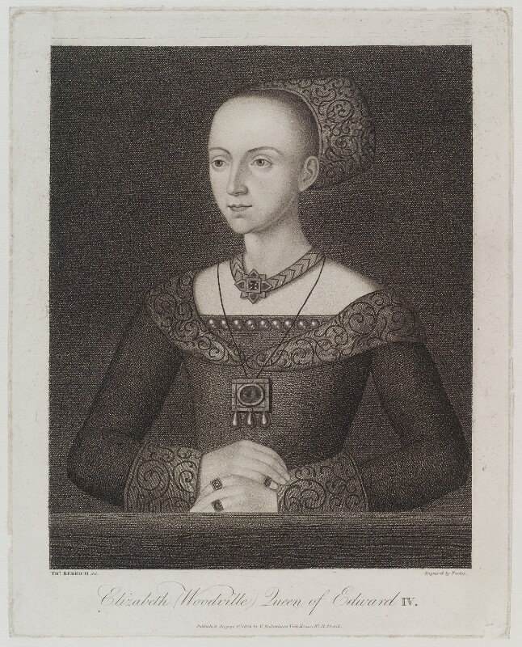

Robert Isham/Isome 1621 - 1662
Robert Isham/Isome 1621 - 1662
Ancestor of Ishams and Isoms in Northamptonshire and Utah
 Robert Isham/Isome 1621 - 1662
Robert Isham/Isome 1621 - 1662
Ancestor of Ishams and Isoms in Northamptonshire and Utah
Robert Isham (1402-1475) was a sixth great-grandfather to Robert Isham/Isome (1621-1662). Robert served for decades as a justice of the peace for Northamptonshire during the period now known as the Wars of The Roses. As a justice of the peace, Robert Isham often traveled from Northamptonshire to Westminster Palace in London to attend commissions of the peace. We have records of Isham sitting in council with King Henry VI as well as Richard, Duke of York, the primary subjects of Shakespeare's trilogy of plays on King Henry VI.
On 17 December 1457, in the midst of the Wars of the Roses, Robert Isham and others from Northamptonshire were commissioned by the king to draft 346 archers from Northamptonshire.
 In 1465, Robert Isham served as solicitor general for Queen Elizabeth Woodville. Wikipedia notes that Elizabeth Woodville appears in two of Shakespeare's plays: Henry VI Part 3 (written by 1592), in which she is a fairly minor character, and Richard III (written approx. 1592), where she has a central role. Shakespeare portrays Elizabeth as a proud and alluring woman in Henry VI Part 3. By Richard III, she is careworn from having to defend herself against detractors in the court, including her titular brother-in-law, Richard.